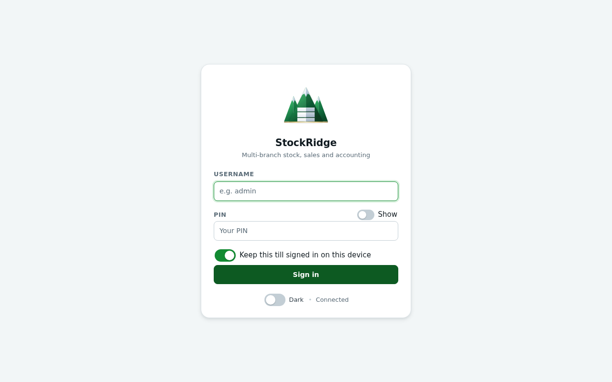
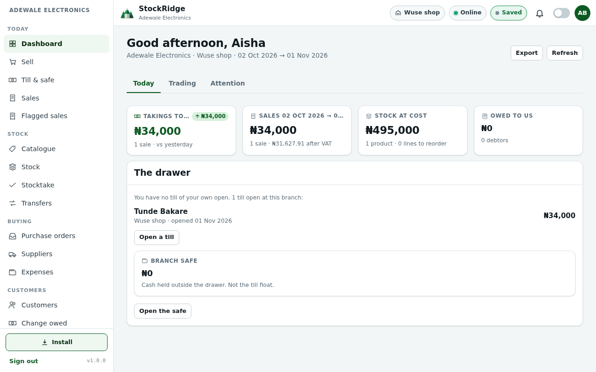
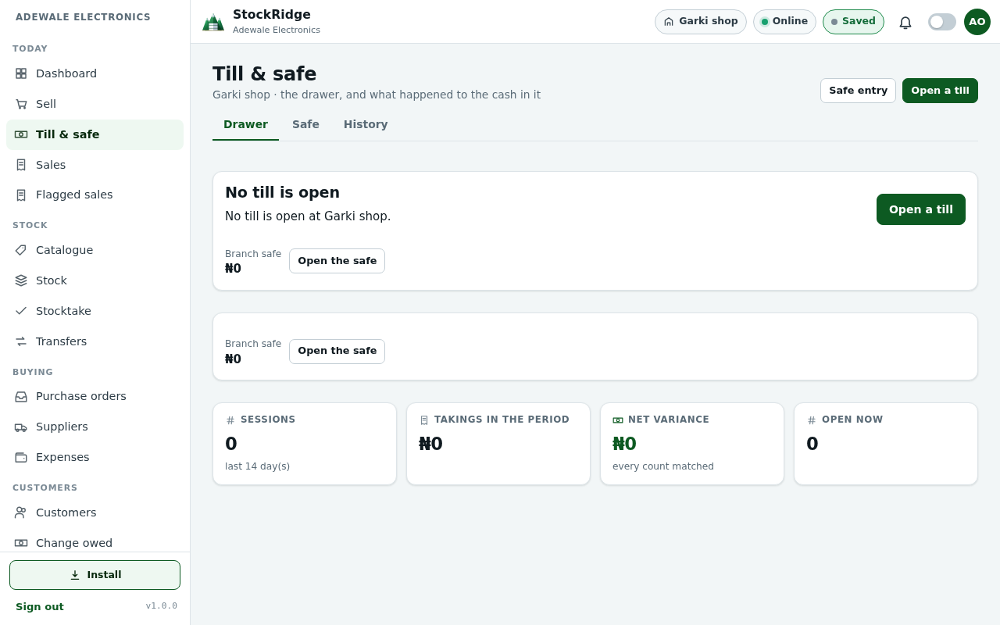
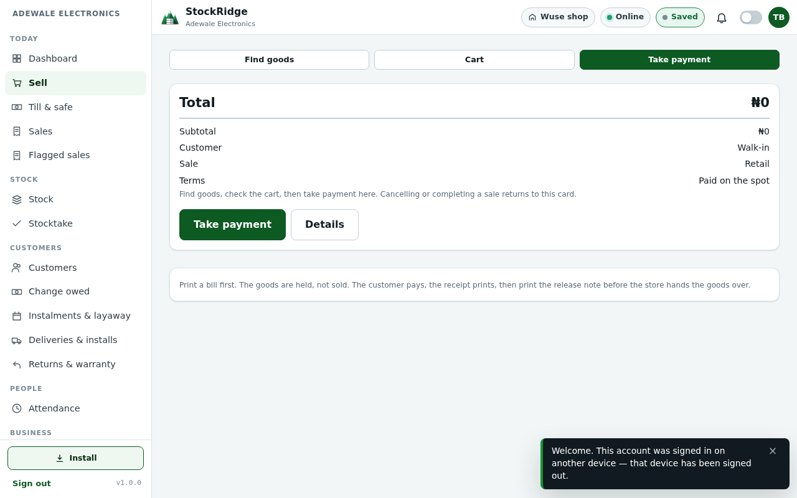
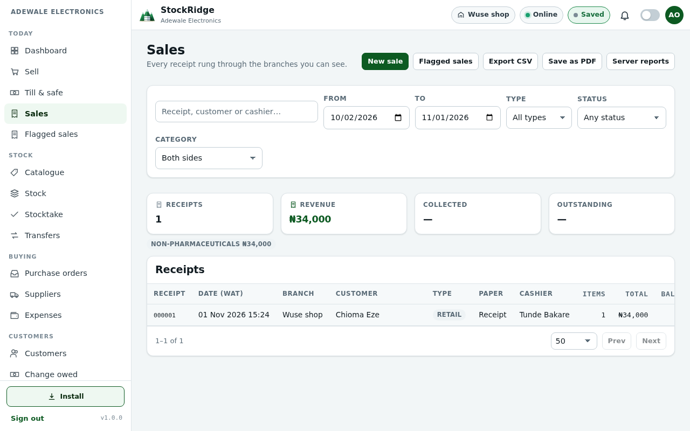
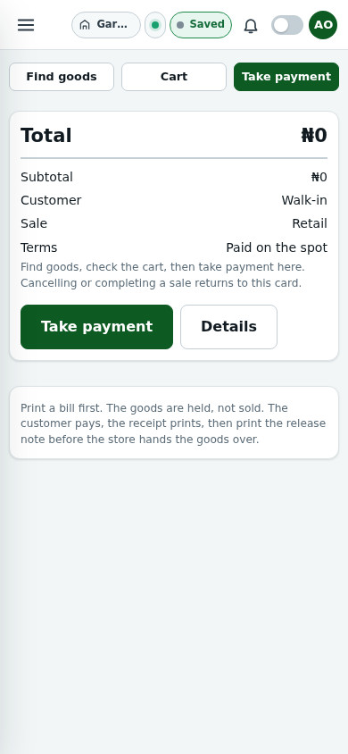
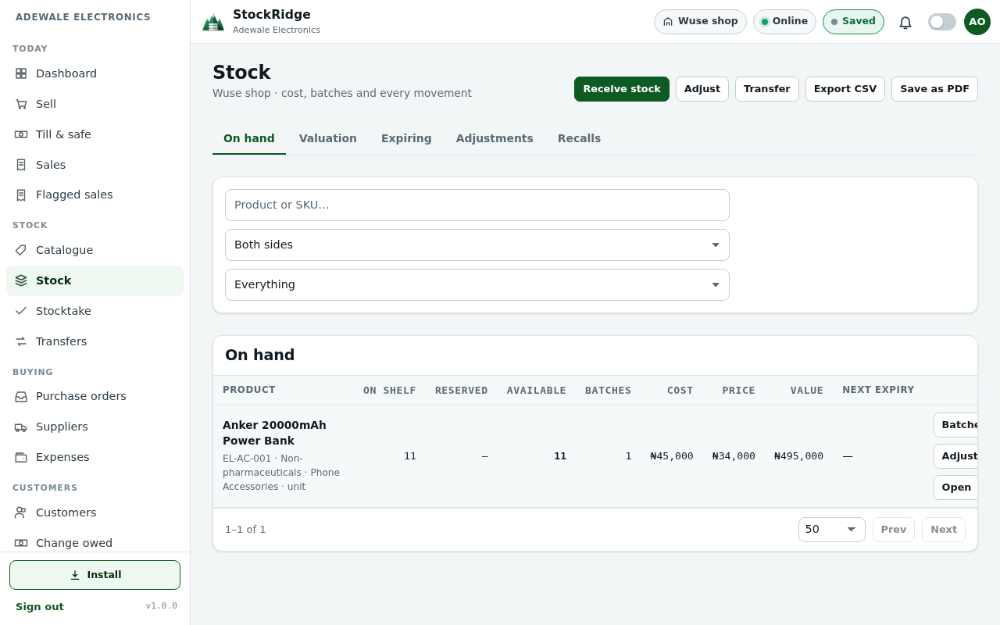

For a single shop or many branches. For the owner, a co-owner, a manager and the person at the counter.
Start with one owner and one cashier. Add a shop, a second owner, or a general manager without inventing a second account for the same person.
StockRidge keeps stock, cash, receipts, people and the books in one record. A sale on the computer, the phone app, or the browser is the same sale once it has reached the shop.
Every screen in this guide is a photograph of the running system, not a drawing. The shop in the photographs is a demonstration electronics business, Adewale Electronics, created for this guide. The figures are that demonstration. They are not a customer's live books.
StockRidge — Onboarding guide. Pricing is not in this guide. Confirm any commercial terms in writing before you pay. This file does not set a price.
There is no pricing chapter. What a deployment costs is agreed outside this guide. The screens that show a subscription are about capacity and switches, not a price list.
Most shop software is a cash register with reports added later. StockRidge is built around the things that actually lose a Nigerian shop money or time.
| The leak | What StockRidge does |
|---|---|
| The counter stops when the network drops | The Windows till sells from the stock already on that computer. The phone keeps the last shop page and queues the sale. Both send it when the line returns. |
| A sale is marked saved when the shop refused it | Saved means the shop has the row, or the till has finished writing it and is still holding it to send. A refusal does not say Saved. |
| Two devices share one sign-in and overwrite each other | One account, one device. Signing in on a second device signs the first one out. The queue of sales stays on the device that made them. |
| No N100 note in the drawer | Change owed is a claim with a code, not a sweet or a scrap of paper. Any cashier on duty can pay it out later. |
| Rent is paid out of the counter drawer | The till drawer and the branch safe are different pots. A cashier spends from the safe only up to the limit a manager set. |
| A pharmacy screen is forced onto a furniture shop | The kind of business turns modules on. A phone shop does not get a dispensary. A water plant does not get a hire book unless that is what it does. |
| The same person is given a second account when they move shop | Transfer and promote keeps one account and one history. A co-owner is an owner of the businesses you tick, not a fifth role. |
The full circle is: people and permissions, then supplier and stock, then the till and the sale, then the receipt, then cash, then the report. Nothing has to be copied into a second book for the reports to agree.

SCREEN 1. The sign-in page. Username and PIN. There is no email reset link.
Everybody signs in with a username and their own PIN. The PIN is not stored on the till. An owner or a manager resets a forgotten PIN from Staff. That reset is recorded.
Tick “Keep this till signed in on this device” only on a till that stays in the shop. A shared phone that walks home should not stay signed in.
The side navigation is grouped by work: Today, Stock, Buying, Customers, People, Money, Business. Your role hides what you are not allowed to open. A module the business does not use is hidden even from the owner — a furniture shop does not show the Greenbook.
The screens are the same. The door is not.
| Door | What it is | How a shop call is made | When the line is down |
|---|---|---|---|
| Browser / PWA | The page at the Worker address. Install is offered. | The page calls /api/... on that same address. | After one connected visit, the service worker can open the shell. Shop answers are never cached. A cached sale total would be a lie. |
| Windows till | The unpacked StockRidge.exe. Not the portable exe. | The window never calls the Worker itself. The program on that computer forwards /api/... and adds the device id. | The till file on that computer holds the catalogue and the queue. A sale is written there before the cashier is told it succeeded. |
| Android app | A window around the same Worker. Install is removed. It does not open the till file and it does not open Turso. | The same /api/... calls as the browser. | The last shop page and its scripts are kept on the phone. A killed app can open that page. Shop answers are not stored. |
The chip beside the shop name says Online, Offline, or Syncing. The save chip says Saving… while a cycle is writing, and Saved only when that write finished honestly. On a narrow phone the word Syncing stays visible. Saving is the other chip.
One stored set of roles. Not five.
| What you need | How it is stored |
|---|---|
| Proprietor, every business | Owner, with no business pinned. A business opened later is already theirs. |
| Co-owner of one or some businesses | The same Owner role, with those businesses ticked. Not a separate co-owner role. A business left unticked is not theirs, including one opened later, until you add it. |
| General manager | Manager, with no branch pinned, for the businesses you name. They see every branch of those businesses. |
| Branch manager | The same Manager role, pinned to one branch. The job title is derived from that pin. It cannot disagree with it. |
| Cashier, sales rep, storekeeper | Staff, always pinned to one branch. |
| StockRidge support | Admin. Not counted against the shop's staff. Not a till account. Hidden from the shop's own staff list. |
Creating a business provisions the chart of accounts, categories, customer classes and a starter catalogue from the profile. Do not trade inside a business you did not mean to create.
Profiles include electronics, furniture, wholesale and retail, building materials, event rental, equipment rental, leasing, provisions and fabrics, pharmaceutical, supermarket, water packing, bakery, and general retail. Water packing and bakery can run a dispatch mix. A phone shop cannot. A pharmacy can use the Greenbook. A furniture shop cannot open it by knowing the address.
You see the businesses you own. A proprietor sees every business. A co-owner sees the ones that were ticked. Settings for the whole deployment, and appointing another co-owner, stay with the proprietor or with StockRidge support.

SCREEN 2. The dashboard after a sale. The line under the greeting names the business, the shop, and the period. Takings today are N34,000 from one sale. Stock at cost is what remains on the shelf. The drawer names the cashier who has it open.
Read that subtitle before you read the numbers. A chip that says one shop while the figures are every shop is how an owner makes a wrong decision. The subtitle is the server's scope, not a decoration.
On a phone the same dashboard is the page. Wide tables scroll sideways. Nothing is removed because the screen is narrow. The word Syncing stays visible. Other net words stay hidden so the bar still fits.
A general manager runs the businesses they were given, day to day. They see what the owner sees inside that set, except the switches that belong to ownership: deployment settings, appointing a co-owner, and writing off change the owner has reserved.
A branch manager runs one shop. StockRidge shows that shop. That is not a punishment. It is so every figure they look at is theirs. They cannot see another shop's safe, stock or staff.

SCREEN 3. Till and safe at Garki, where nobody has opened a drawer. The other shop can have a till open at the same time. The screen must not borrow Garki's empty drawer onto Wuse's figures, or the reverse.
Opening a till records the float that is actually in the drawer. Closing it records the count. A shortage with an honest note is a normal event. A count typed to match the screen is what turns a small gap into a missing day.
You sell, you take money, you clock in and out. The busiest person has the fewest steps: find the goods, check the cart, take payment.

SCREEN 4. Sell, signed in as the cashier at Wuse shop. The total is what the shop will post, not a number typed beside it.

SCREEN 5. The receipt after the sale. 000001, 01 Nov 2026, Wuse shop, Chioma Eze, Tunde Bakare, N34,000. The catalogue price won. A payment that did not match that total was refused.

SCREEN 6. The same Sell screen at phone width. Take payment stays on the page. The menu is behind the button at the top left.
If the customer hands over more than the sale and you have no change, hold the difference as change owed and print the code. Do not pretend the payment was exact. The shop refused a demonstration payment that was N24,500 over the sale and not held as change. That refusal is the point.

SCREEN 7. Stock at Wuse after receiving 12 and selling 1. Eleven remain. Cost N45,000. Price N34,000. Value N495,000, which is eleven times the cost. The shelf and the books agree.
| Pot | What it is | Who moves it |
|---|---|---|
| Till drawer | The float and today's cash | Whoever has the till open. Open it with the notes that are actually there. |
| Branch safe | The reserve that does not live in the drawer | A manager records money in and out with a reason. A cashier spends from it only up to the allowance. |
| Shelf | Batches, with cost and, where the profile uses it, expiry | Receive, adjust, transfer, or sell. A transfer keeps the batch. The receiving shop confirms the quantity. |
Purchase orders are how opening stock should arrive: a supplier, a cost, and a quantity you counted. A stocktake compares the shelf to the system. Close it only after the variances have a reason.
Customers, change owed, instalments, deliveries and returns sit under Customers. They appear when the business uses them. A walk-in cash sale does not need a customer record. A credit sale does. The invoice has to belong to someone who can pay it later.
“Own branch” means the rule applies only at the branch that person is pinned to. A general manager has no branch pin, so “own branch” does not apply to them inside the businesses they were given.
| Action | Owner | General manager | Branch manager | Staff |
|---|---|---|---|---|
| Make a sale | Yes | Yes | Yes | Yes |
| Open and close a till | Yes | Yes | Yes | Yes |
| See another shop's drawer | Yes, inside their businesses | Yes, inside their businesses | No | No |
| Receive stock, raise a purchase order | Yes | Yes | Own branch | No |
| Change a selling price | Yes | If the owner left that switch on | If the owner left that switch on | No |
| Hire staff | Yes | Yes | Own branch, below themselves | No |
| Appoint a co-owner | Proprietor only | No | No | No |
| See accounting | Yes | No | No | No |
| See reports | Yes | Yes | Own branch | No |
| Reset a PIN | Yes, for people they may manage | Yes, below themselves | Own branch, below themselves | No |
Admin is not in this table. That account configures the deployment. It is not a cashier and it is not an owner of the shop.
Nigerian shops do not have reliable connectivity. Software that assumes otherwise stops the counter. StockRidge is built the other way round.
This guide was not drawn and then hoped to match the software. The demonstration shop was created through the same create-business path a deployment administrator uses. Then the routes the screens call were exercised.
| What was asked of the system | What it did |
|---|---|
| Create an electronics business and its first shop | Provisioned the catalogue. Fifty products. A second shop, Garki, was added beside Wuse. |
| Create proprietor, co-owner, general manager, branch manager, cashier | Five people, four stored roles. Co-owner was Owner plus the ticked business. General manager was Manager with no branch pin. |
| Receive 12 of a power bank and sell 1 | Shelf went to 11. Value N495,000. Receipt 000001 at the catalogue price, N34,000. A payment of N60,000 with only N1,500 held as change was refused. |
| Open a till, record an expense, clock in | The drawer opened with a N20,000 float. The expense posted. The shift started. |
| Read the screens an owner opens | Dashboard, sales, stock, customers, suppliers, orders, expenses, change owed, attendance, returns, reports, accounting, compliance, plan, sync and audit answered. |
| Ask for stock with no shop chosen, as an owner of two shops | Refused. The system will not guess which shop a stock or cash figure belongs to. |
| Pull a hire book and a pharmacy register for an electronics shop | The shop answered 403. The till does not treat that as a missing catalogue. Those modules are not this business. |
| Live sample and office hosts | Both answered health. They were not written to. The seven trading businesses were left alone. No PIN was reset. |
One screen did not fulfil its job. The dashboard subtitle stayed on “Loading the position…” after the figures had arrived, because it looked for itself in the document before the page had been attached. The figures could then be read without the shop and the period. That lookup now uses the page being built. The photograph in chapter 5 is after that fix: “Adewale Electronics · Wuse shop · 02 Oct 2026 → 01 Nov 2026”.
The Windows till and the phone app load this same screen code. The till copies it when the shop screens are staged. The phone loads it from the Worker after a deploy. A fresh Node database also failed to apply the rental-branch migration while stock views still named the branches table. The migrator now parks those views and puts them back. The applied SQL file was not edited. The live database had already passed that file, and it was not copied.
The full route-by-route note is in the production audit, row 34. Not every button was pressed on a physical till or a physical phone in this pass. Those two programs were not opened on the shop computer or the handset. The shared screens and the shop routes were.
The photographs were taken from the running application against one demonstration electronics business with two shops and five people. Figures shown are that demonstration, not a live customer's books.
StockRidge — Onboarding guide. No price is stated here. The commercial terms are a separate writing.